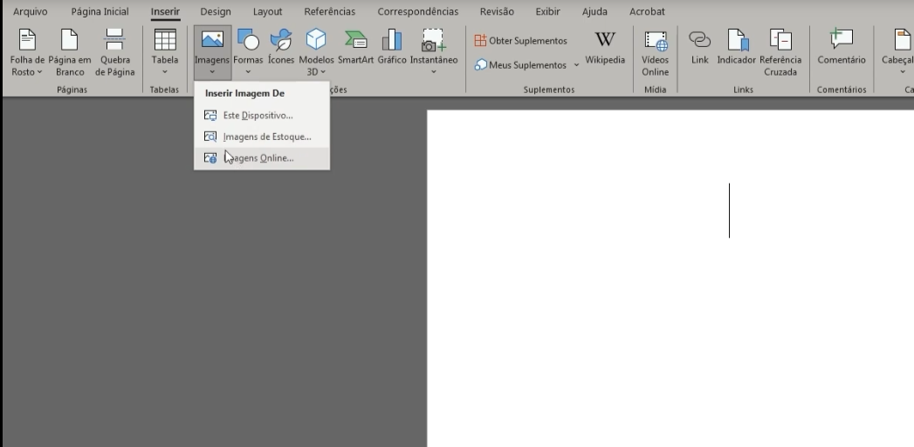

Fases do recebimento de equipamentos, materiais e produtos; sistema de informação no controle de entrada e saída de cargas; e procedimento de devolução
Este conhecimento abordará alguns aspectos importantes da logística, os quais auxiliam a manter as operações eficientes. Primeiro, serão apresentadas as fases do recebimento de equipamentos, materiais e produtos, incluindo a entrada, a conferência qualitativa e quantitativa e a regularização. Esses processos garantem que as mercadorias recebidas estejam corretas em termos de qualidade e quantidade, evitando erros e perdas.
Depois, serão tratados os procedimentos de devolução, tanto físicos quanto documentais, essenciais para manter o estoque em ordem e garantir a satisfação do cliente. Por fim, será discutida a relevância dos sistemas de informação no controle de entrada e saída de cargas, evidenciando como a tecnologia pode melhorar o rastreamento, a gestão de inventários e a tomada de decisões. Com esses conhecimentos, você estará mais preparado para enfrentar os desafios logísticos do dia a dia.
Clique ou toque para visualizar o conteúdo.
Fases do recebimento
Fases do recebimento de equipamentos, materiais e produtos: entrada, conferência qualitativa, quantitativa e regularização
O recebimento é uma etapa crucial na logística, garantindo que os produtos ou materiais que chegam ao estoque estejam conforme o esperado. Isso inclui verificar a sua integridade física ou química e confirmar quantidades, volumes, pesos, prazos de validade e outros requisitos específicos.
As atividades de recebimento começam com a chegada do material enviado por fornecedores e ou clientes e vai até a entrada dele nos estoques, integrando-se as informações com as áreas de contabilidade, compras e transporte. Essas etapas asseguram que tudo está em ordem antes de o material ser armazenado.
Entrada de materiais e produtos (descarga)
Na descarga e entrada de materiais, é essencial seguir algumas etapas, tais como: recepção dos veículos autorizados, interação com os responsáveis pelo descarregamento e pela conferência dos itens na nota fiscal (NFe/Danfe) ou documento autorizado. Deve-se verificar se a mercadoria está dentro do prazo de entrega e se o número do pedido está na nota fiscal. Compras não autorizadas ou fora do prazo não devem ser aceitas e os motivos do não recebimento devem ser registrados no verso da NF.
Qualquer divergência ou irregularidade deve levar à recusa do recebimento. Tal recusa pode ser formalizada mediante a emissão de uma nota fiscal de devolução ou por meio do registro dessa recusa e de seus respectivos motivos no verso da própria nota fiscal. No segundo caso, o emitente da nota fiscal fornecerá uma NF de entrada para a mercadoria devolvida. É importante notar que, devido à circulação da mercadoria, a NF original não pode ser cancelada. Se a nota fiscal de devolução for eletrônica, ela deve ser autorizada pelo Fisco e enviada ao destinatário da NF original. Também é possível fazer o recebimento parcial, ou seja, o recebimento somente das mercadorias que constam na nota fiscal para que a empresa não fique sem material.
Conferência quantitativa
Na etapa da conferência quantitativa, também conhecida como "contagem cega", o conferente realiza a contagem dos produtos e materiais recebidos sem ter conhecimento prévio da quantidade faturada pelo fornecedor. Somente após essa contagem é que ocorre a comparação com os itens listados na nota fiscal. Assim, qualquer discrepância identificada durante a análise leva à realização de uma recontagem para garantir a precisão no recebimento.
Por exemplo, suponha que uma loja receba uma remessa de 100 caixas de chocolates. O conferente verifica a quantidade recebida, por exemplo, 97 caixas, sem saber previamente quantas caixas foram faturadas. A comparação entre o recebido (97 caixas) e o faturado (100 caixas) é feita após a contagem, completando, assim, a conferência quantitativa.
Conferência qualitativa
Considere ainda a remessa de 100 caixas de chocolates. Agora, na conferência qualitativa, será dado mais um passo. Além de garantir a quantidade correta, é preciso verificar se as caixas de chocolates estão em perfeito estado, se não há sinais de danos ou violações. Também será necessário conferir se as especificações estão corretas, como o tipo de chocolate, a validade e se os sabores correspondem aos pedidos feitos. Esse é um passo fundamental para garantir não apenas a quantidade, mas também a qualidade dos produtos recebidos.
Fonte: Senac EAD (2025)
Uma NF-e em formato PDF. O documento exibe informações de identificação do emitente e destinatário, detalhes da venda de um produto manufaturado, cálculos de impostos, dados do transportador e informações adicionais, incluindo o valor total da nota fiscal e um código de barras simulado.
Agora que você já compreendeu os tipos de conferência, que tal entender mais sobre o membro mais importante desta operação?
A nota fiscal
Ao receber um produto, o responsável deve verificar os seguintes itens na nota fiscal:
- Data de emissão e saída
- Natureza da operação
- Dados do remetente e destinatário: CNPJ/CPF, razão social e endereço
- Valor e quantidade do produto
- Descrição do produto: nome, marca e lote
- Quantidade e volumes transportados: conferir se corresponde ao valor e peso especificado
Questões fiscais devem ser revisadas pelo setor contábil, que é responsável por corrigir qualquer incoerência.
Regularização
A regularização é a fase decisiva no processo de recebimento, na qual são verificadas a qualidade e a quantidade dos materiais recebidos por meio de laudos de inspeção técnica, garantindo a tomada de decisões informadas sobre a aceitação ou recusa dos produtos. Após as minuciosas conferências quantitativa e qualitativa, além da comparação entre o produto físico e a nota fiscal, é possível encontrar as seguintes situações:
Quando tudo estiver em ordem após as conferências, a nota fiscal é enviada ao setor responsável pela entrada e, posteriormente, à equipe financeira, que se encarrega de agendar o pagamento.
Se houver divergências após as conferências, será necessário proceder com a devolução do produto ao fornecedor. Essa ação, antes de ser aplicada, deve considerar outros aspectos, como o caráter emergencial do produto, o tipo de erro ou a falta e as possibilidades de ajustes.
Lojas de vestuário recebem caixas de roupas e descarregam no estoque a quantidade especificada nas notas fiscais. No entanto, ao abrir as caixas, pode ser observado que as roupas não correspondem às especificações, pois algumas têm cores repetidas e outras cores estão faltando. Nesse caso, a devolução torna-se essencial para não comprometer as vendas da coleção da estação.
Se forem constatadas irregularidades passíveis de ajustes, o responsável pelo recebimento deverá contatar a empresa que efetuou a remessa e registrar formalmente as adequações necessárias, para que, após o aceite do acordado, a carga seja então recebida e armazenada.
Entrada de material no estoque
Após todas as conferências e a regularização, o material é fisicamente adicionado ao estoque.
Fique atento: produtos que na conferência apresentaram excesso ou defeito poderão ser devolvidos ao fornecedor, junto com a nota fiscal de devolução emitida pela empresa compradora. A falta de produtos também deve ser indicada nesse processo.
Como futuro técnico em logística, é imperativo reconhecer que todas as etapas e precauções inerentes ao processo de recebimento de materiais são fundamentais para o bom funcionamento da organização. Realizar corretamente as conferências evita complicações e gera eficiência na administração dos estoques, o que pode consolidar uma diferenciação em relação aos concorrentes, melhorando a qualidade, reduzindo o tempo, diminuindo os custos e oferecendo uma vantagem competitiva para a empresa.
Procedimento de devolução
Procedimentos de devolução: físico e documental
Na logística, é comum que uma mercadoria seja enviada com uma nota fiscal de saída, mas acabe retornando ao estabelecimento de origem sem ter sido aceita pelo destinatário. Isso pode ocorrer por diversos motivos, como mudança de endereço, dados incorretos na nota fiscal, falta de agendamento para a entrega, erro no envio da mercadoria, mercadoria danificada, feriados locais ou outras razões.
Esses casos enquadram-se na operação de retorno de mercadoria não entregue. Nessa operação, a mercadoria não chega a ser recebida fisicamente ou contabilmente pelo destinatário. Na prática, se o destinatário é encontrado, ele pode recusar a mercadoria no verso da primeira via da nota fiscal. Se não for encontrado, a recusa é registrada pelo transportador no verso da nota fiscal.
Retorno de mercadoria não entregue
Em uma loja de vestuário, por exemplo, o conferente compara a NF de compra com o controle de pedido e constata que o fornecedor enviou o dobro das mercadorias solicitadas. Atento aos procedimentos da loja, ele recusa a mercadoria imediatamente e o pedido retorna ao fornecedor com a mesma NF, sem entrar no estoque da loja.
Casos assim são comuns quando vendedores tentam atingir metas faturando pedidos maiores. Se o conferente aceitasse a mercadoria, problemas poderiam surgir, como boletos bancários para pagamento desnecessário. A recusa evita o descarregamento e os trâmites posteriores de devolução, prevenindo desgastes comerciais. A devolução de mercadoria visa anular todos os efeitos de uma operação anterior, incluindo os tributários. Portanto, o destinatário devolve a mercadoria ao remetente devido a irregularidades nas mercadorias ou nas condições negociadas.
Devolução de mercadoria a posteriori
Ainda com o exemplo de uma loja de vestuário, o conferente recebeu as caixas e confirmou que a quantidade geral estava correta conforme a NF e o controle de pedidos. No entanto, ao abrir as caixas, ele descobriu que as cores e os tamanhos das camisas não estavam de acordo com o pedido.
-
O pedido original era:
- 30 camisas brancas – 10 P, 10 M e 10 G
- 30 camisas pretas – 10 P, 10 M e 10 G
- 30 camisas vermelhas – Todas G
- 30 camisas pretas – 20 M e 10 G
Ao conferir, o profissional encontrou:
A loja precisará realizar a devolução da NF e da mercadoria para corrigir a discrepância. A devolução é comum para ajustar erros nos pedidos, como dados incorretos da empresa ou problemas com a mercadoria, como quantidade errada, qualidade insatisfatória, tipo incorreto ou preço errado.
Como proceder documentalmente
A recusa de mercadoria pode ser registrada de duas maneiras: o destinatário pode emitir uma nota fiscal de devolução ou recusar a mercadoria no verso da própria NF, indicando os motivos.
No segundo caso, o emitente da NF deve emitir uma NF de entrada para receber a mercadoria devolvida.
Importante: como a mercadoria já circulou, a NF original não pode ser cancelada. Se a nota fiscal de devolução for eletrônica, deve ser autorizada pelo Fisco e enviada ao destinatário da NF original.
Observação para devolução de troca a posteriori
É essencial verificar o prazo para o retorno da mercadoria, que começa a contar a partir da saída. É importante distinguir entre as operações de devolução e retorno de mercadoria não entregue.
A devolução ocorre quando a mercadoria é recebida pelo destinatário, mas, por motivos comerciais, é retornada ao remetente com a emissão de nota fiscal e a tributação adequada. Já o retorno de mercadoria não entregue acontece quando a mercadoria volta ao fornecedor sem ter sido recebida pelo destinatário, independentemente do motivo.
Mesmo que o fornecedor recuse a devolução, isso não cancela os efeitos fiscais da operação. A nota fiscal de devolução é válida para fins contábeis e fiscais, e a mercadoria deve ser retornada ao estoque com a emissão da nota fiscal de compra, usando os CFOPs (Códigos Fiscais de Operações e Prestações) correspondentes:
- Para mercadorias adquiridas para industrialização:
- CFOP 5.201: operações no estado
- CFOP 6.201: operações em outros estados
- Para mercadorias adquiridas para comercialização:
- CFOP 5.202: operações no estado
- CFOP 6.202: operações em outros estados
- Para mercadorias adquiridas para ativo fixo ou consumo próprio:
- CFOP 5.553 e 5.556: operações no estado
- CFOP 6.553 e 6.556: operações em outros estados
Sistema de informação
Sistema de informação no controle de entrada e saída de cargas: editor de textos e planilha eletrônica
Os sistemas de informações logísticas são ferramentas essenciais para a organização e o gerenciamento das atividades de transporte, armazenamento e entrega de produtos. Eles contribuem para que os produtos cheguem aos destinos de forma ágil.
Editor de textos
O Microsoft Word 2013 é um programa de editor de textos em que podem ser criados documentos. Para iniciá-lo, clique no botão Iniciar na barra de tarefas do Windows, aponte para Todos os programas, selecione Microsoft Office e clique em Microsoft Office Word 2013.
Quando o Word 2013 abrir, clique na opção Documento em branco. A área branca que ocupa a região central da tela do computador é chamada de área de trabalho e corresponde ao espaço (“papel”) reservado para a digitação do texto. Acima, é possível visualizar botões, guias, faixa de opções e outras ferramentas úteis com as quais poderá trabalhar o texto.
Clique ou toque para visualizar o conteúdo.
1. Guias: Cada guia tem acesso a diferentes grupos e comandos que o programa oferece.
2. Grupos: Os grupos em cada guia dividem a tarefa em subtarefas.
3. Comandos: Um comando pode ser representado por um botão, um menu ou caixas de informações.
A imagem exibe a interface de um documento aberto no Microsoft Word, com destaque para três áreas principais numeradas: 1. Barra de ferramentas superior: contém as guias "Arquivo", "Inserir", "Design", "Layout da página", "Referências", "Correspondências", "Revisão" e "Exibição". 2. Seção de formatação de fonte: permite escolher o tipo e o tamanho da fonte (exemplo: Calibri (Corpo), tamanho 11), além de aplicar estilos como negrito, itálico e sublinhado. 3. Seção de formatação de parágrafo: oferece opções de alinhamento do texto (à esquerda, centralizado, à direita), espaçamento entre linhas e uso de marcadores. No canto superior direito da janela está o título do documento: “Documento3 - Word”.
Fonte: Senac EAD (2025)
Assista a seguir a um vídeo sobre como formatar imagens, gráficos e tabelas no Word.
Clique ou toque sobre a tela para assistir ao vídeo.
Como inserir e formatar imagens, gráficos e tabelas no Word
Para criar documentos bem-organizados e visualmente atraentes, é essencial que você saiba inserir e formatar imagens, gráficos e tabelas no Word.
Para inserir uma imagem, clique na guia Inserir no menu superior. Selecione o item Imagens e escolha a opção de onde deseja inserir, se é do seu dispositivo ou da internet. Após selecionar a imagem, clique em Inserir.

Tela do Word com a opção Inserir Imagem
Fonte: Senac EAD (2025)
Captura de tela da interface do Microsoft Word em português, com a guia "Inserir" ativa. No topo, estão visíveis as abas do menu principal: "Arquivo", "Página Inicial", "Inserir", "Design", "Layout", "Referências", "Correspondências", entre outras. Um menu suspenso está aberto sob a opção “Imagens”, exibindo três alternativas: “Este Dispositivo...”, “Imagens de Estoque...” e “Imagens Online...”. A área principal do documento está em branco, com o cursor posicionado, pronto para inserção de texto.
Para redimensionar a imagem, clique sobre ela e arraste os pontos nas bordas. Caso queira mover a imagem, basta clicar nela e arrastá-la até o local desejado.
Tela do Word com a opção Formato de Imagem
Fonte: Senac EAD (2025)
Captura de tela do Microsoft Word com a interface em português. No centro da tela, há uma foto de um filhote de gato laranja. A imagem do gato está selecionada e há setas nos cantos e nas laterais, indicando que ela pode ser redimensionada ou ajustada. Na parte superior da interface, estão visíveis opções de formatação de imagem, como ferramentas para ajustar o tamanho e para aplicar estilos, bordas, efeitos e alinhamento.
Gráficos
Para inserir um gráfico, clique na guia Inserir e em Gráfico. Escolha o tipo de gráfico que melhor se adapta aos seus dados, como o tipo coluna, linha, pizza ou outras opções. Clique em OK e uma planilha será aberta para você inserir os dados.
Tela do Word com a opção Inserir e Gráfico
Fonte: Senac EAD (2025)
Captura de tela do Microsoft Word com a janela "Inserir Gráfico" aberta. No lado esquerdo da janela, há uma lista de tipos de gráficos disponíveis, incluindo: Coluna; Linha; Pizza, entre outros. No painel principal da janela, um gráfico de barras (coluna) está selecionado e exibido como pré-visualização. Uma seta vermelha aponta para a opção "Coluna Agrupada", e um retângulo vermelho destaca o botão "OK", localizado no canto inferior direito da janela. Na parte superior da tela, é visível a faixa de opções do Word, com guias como "Página Inicial", "Inserir", entre outras.
Preencha os dados na planilha e o gráfico será atualizado automaticamente no documento.
Tabelas
Para inserir uma tabela, clique na guia Inserir e depois em Tabela.
Parte da Tela do Word com a opção Inserir e Tabela
Fonte: Senac EAD (2025)
Captura de tela do Microsoft Word com a guia "Inserir" ativa. Um menu suspenso está aberto sob a opção "Tabela", exibindo uma grade de seleção de tamanho de tabela. A grade mostra uma tabela 7x3 (7 colunas por 3 linhas) destacada em cinza, indicando a seleção atual. Ao lado da opção "Tabela", também são visíveis outras opções do menu, como "Quebra de Página" e "Imagem".
Você pode arrastar o cursor para selecionar o número de linhas e colunas que você quer ou pode clicar em Inserir tabela para definir manualmente. Após isso, você pode adicionar conteúdo em cada célula, basta clicar sobre elas.
De outra forma, quando seu objetivo for formatar sua tabela, basta selecioná-la e clicar na guia Design que aparece no menu superior. Você poderá escolher diferentes estilos, cores e bordas.
Tela do Word com a opção Tabela de Design
Fonte: Senac EAD (2025)
Captura de tela do Microsoft Word, com a guia "Ferramentas de Tabela" ativada. Dentro dessa guia, a subguia "Design" está selecionada, exibindo várias opções de estilos de tabela na faixa de opções. Uma seta vermelha aponta para um dos estilos de tabela disponíveis, destacando-o visualmente. Na parte inferior da tela, dentro do documento, há uma tabela inserida com células vazias, pronta para ser preenchida.
Para adicionar ou remover linhas e colunas, clique com o botão direito do mouse sobre a tabela e selecione as opções desejadas. Você também pode ajustar a largura das colunas e a altura das linhas arrastando as bordas.
Agora que você já sabe como inserir e formatar imagens, gráficos e tabelas no Word, pratique esses passos para melhorar seus documentos. Certamente eles vão ficar muito mais profissionais.
Exemplo de documentos aplicados na logística
Conheça agora alguns exemplos de controle que podem ser realizados no Microsoft Word, utilizando os recursos e as ferramentas que o programa proporciona para realizar um documento eficaz e profissional.
Fonte: Senac EAD (2025)
Formulário intitulado "Controle e entrega de equipamentos de proteção individual". Ele é composto de campos a serem preenchidos com as seguintes informações: Nome; Nº de registro; Data de admissão; Função; Seção; Data de emissão. Abaixo desses campos, há um texto declarativo que afirma que o funcionário recebeu da empresa os EPIs (equipamentos de proteção individual) listados na ficha, comprometendo-se a utilizá-los corretamente conforme a NR-6 da Portaria 3.214 do MTE. O texto também menciona a obrigatoriedade de devolução dos EPIs ao final do vínculo com a empresa. Na parte inferior do formulário, há espaços reservados para a assinatura do funcionário e a data.
Fonte: Senac EAD (2025)
Tabela de controle de EPIs com as seguintes colunas: Data (subdividida em "Retirada" e "Devolução"); Qtd. (quantidade); Und. (unidade); Descrição do equipamento; Assinatura. As linhas da tabela listam diversos tipos de EPIs, incluindo: capacete; capuz; óculos; creme protetor; luvas de proteção; mangas, mangotes, dedeira; botas e botinas; cinto de segurança; máscara de proteção respiratória; conjunto de calças e blusão, aventais e capas; protetores auriculares. A tabela contém espaços em branco para preenchimento das datas de retirada e devolução, as quantidades, as unidades e as assinaturas correspondentes.
Planilha eletrônica
Na planilha eletrônica é possível colocar dados em forma de tabela e aproveitar a grande capacidade de realizar operações matemáticas e lógicas. O Excel é uma ferramenta poderosa que pode ser utilizado para calcular, armazenar e trabalhar com lista de dados, criar relatórios e gráficos.
Ambiente de trabalho
A janela do Excel 2013 contém ferramentas necessárias para criar, alterar e remover objetos. Um arquivo do Excel é chamado de pasta de trabalho e pode conter uma ou mais planilhas armazenando dados.
Clique ou toque para visualizar o conteúdo.
1. Guias: cada uma representa tarefas principais executadas no Excel.
2. Caixa de nome: a caixa de nome exibe o nome da célula que está selecionada no momento (exemplo: endereço B2).
3. Grupos: cada guia tem grupos que mostram itens relacionados reunidos.
4. Comandos: um comando é um botão, uma caixa para inserir informações ou um menu.
5. Barra de fórmulas: local em que são inseridos os textos e as fórmulas utilizadas nas planilhas.
6. Guias de planilhas: normalmente, estão disponíveis três planilhas para o uso, contudo é possível inserir outras, conforme a necessidade. Para ativar qualquer uma delas, clique na guia correspondente, fazendo o mesmo para renomeá-la.
7. Células: as células são dispostas em linhas e colunas. Cada célula tem um endereço que nada mais é do que a junção da sua linha com a coluna, dispondo de 1.048.576 linhas por 16.384 colunas (de A à XFD).
Captura de tela com a interface do Microsoft Excel, com várias setas numeradas destacando elementos específicos da tela. A seta 1 abrange as guias Arquivo, Página Inicial, Inserir, Layout da página, Fórmulas, Dados, Revisão, Exibição e Desenvolvedor. A seta 2 indica a célula A1, que está selecionada. A seta 2 indica a célula A1, que está selecionada. A seta 3 destaca o menu "Alinhamento". A seta 4 aponta para o botão "Formato do número de contabilidade", na guia "Número". A seta 5 indica o local em que as fórmulas são inseridas da lacuna para "Inserir função". A seta 6 mostra a área principal da planilha, em que estão dispostas as células. A seta 7 aponta para a aba da planilha ativa, chamada "Plan1".
Fonte: Senac EAD (2025)
Os comandos mais utilizados do Excel estão dispostos nas guias principais que sempre ficam visíveis para o usuário. Os demais comandos são exibidos em guias somente quando necessário, como, por exemplo, a guia Ferramentas de Imagem, que é exibida somente quando uma imagem for selecionada.
Inserção de dados
A inserção de dados em uma planilha é feita pelo teclado do computador e em alguns casos pelo mouse. Para inserir informações na sua planilha faça o seguinte:
- Clique na célula que quer preencher.
- Digite os dados.
- Confirme a operação pressionando uma destas duas teclas:
Se você teclar Enter, automaticamente a célula que está abaixo ficará selecionada e, se você pressionar o botão Inserir, a célula em que você inseriu os dados se manterá selecionada. Essa última alternativa é interessante quando, após a digitação, for preciso fazer alguma outra operação com a mesma célula, como, por exemplo, formatá-la, copiá-la etc.
Se você quiser cancelar a informação digitada em uma célula, basta pressionar a tecla Esc ou então clicar no botão Cancelar. O conteúdo anterior daquela célula (ou conjunto de células) é restaurado.
O Excel aceita como entrada de dados textos, data e hora, valores numéricos e fórmulas.
Exemplo de planilhas aplicadas na logística
Uma das utilizações de planilha é a busca de informações dos clientes para criar uma nota fiscal de venda de produtos. Ao ser digitado o código do cliente e o código do produto, as informações são procuradas nas respectivas planilhas de cadastro de clientes e cadastro de produtos. Deve ser preenchida a quantidade vendida para que seja calculado o valor total de cada produto vendido.
Fonte: Senac EAD (2025)
Cliente:
Nome: Marcelo Ventura
Endereço: Rodovia Anhangüera, Km 180
Cidade: Porto Alegre
Estado: RS
Telefone: (51) 3345-4545
Detalhes da Nota Fiscal:
Código do Cliente: 1000
Data: 18/01/2017
Cotação do Dólar: R$ 3,20
A tabela de produtos comprados é a seguinte:
| Cód. prod. | Produto | Marca | Preço Unitário (US$) | Quantidade | Total (R$) |
|---|---|---|---|---|---|
| 0001 | Bolsa em couro | MK | $100,00 | 1 | R$ 320,00 |
| 0005 | Moletom | Gap | $55,00 | 3 | R$ 528,00 |
| 0002 | Sapato masculino | Ramarin | $20,00 | 2 | R$ 128,00 |
| 0004 | Caixa jeans | Colcci | $40,00 | 1 | R$ 128,00 |
| Total geral | R$ 1.104,00 | ||||
Fonte: Senac EAD (2025)
A tabela está preenchida com os seguintes dados:
| Código cliente | Cliente | Endereço | Cidade | Estado | Telefone |
|---|---|---|---|---|---|
| 1000 | Marcelo Ventura | Rodovia Anhanguera, Km 180 | Porto Alegre | RS | 5133456545 |
| 1001 | Rodrigo Manzano | R. Antônio de Castro, 362 | São Paulo | SP | 1135656858 |
| 1002 | Anelise Pereira | R. Tiradentes, 123 | Fortaleza | CE | 8864758252 |
| 1003 | Carlos Taka | Av. Orozimbo Maia, 987 | Curitiba | PR | 4134789563 |
| 1004 | Cláudia Leite | Rodovia Rio/São Paulo, Km 77 | Rio de Janeiro | RJ | 2158741479 |
| 1005 | Cláudia de Mattos | R. Júlio Mesquita, 66 | Belo Horizonte | MG | 3134685298 |
Fonte: Senac EAD (2025)
Os dados preenchidos na planilha são:
Produto: Bolsa em couro | Marca: MK | Preço: $ 100,00 | Estoque: 999
Produto: Sapato masculino | Marca: Ramarin | Preço: $ 20,00 | Estoque: 636
Produto: Sapato feminino | Marca: CNS | Preço: $ 35,00 | Estoque: 900
Produto: Calça Jeans | Marca: Colcci | Preço: $ 40,00 | Estoque: 707
Produto: Moletom | Marca: Gap | Preço: $ 55,00 | Estoque: 999
Produto: Chinelo | Marca: Havaianas | Preço: $ 9,00 | Estoque: 880
Produto: Perfume masculino | Marca: Hugo Boss | Preço: $ 50,00 | Estoque: 544
Produto: Perfume feminino | Marca: J’adore Dior | Preço: $ 80,00 | Estoque: 863
Produto: Vestido | Marca: Calvin Klein | Preço: $ 150,00 | Estoque: 786
Há alternativas gratuitas ao pacote Office, como o LibreOffice e o BrOffice, que podem ser utilizadas por indivíduos e instituições. Além disso, há a disponibilidade de serviços como o Word On-line e os documentos do pacote Office, acessíveis diretamente no Google Drive.
Encerramento
Este conteúdo abordou as fases do recebimento de equipamentos, materiais e produtos desde a entrada, a conferência qualitativa e quantitativa até a regularização. Você também estudou os procedimentos de devolução tanto físico quanto documental e, por fim, entendeu o quanto os sistemas computacionais são essenciais para ajudar na gestão, no controle e na eficiência da cadeia de suprimentos.